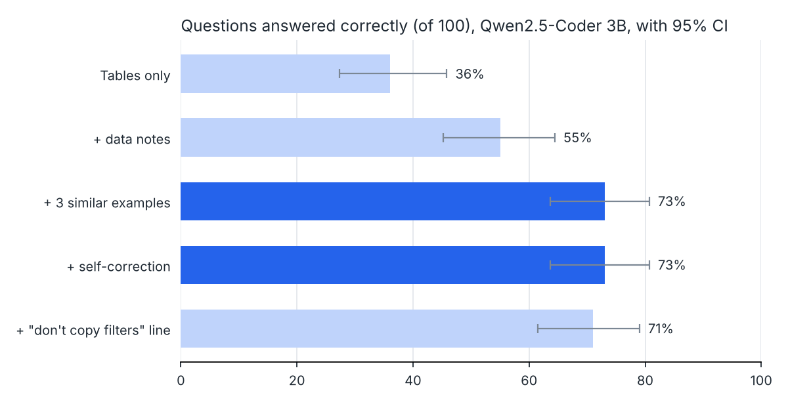
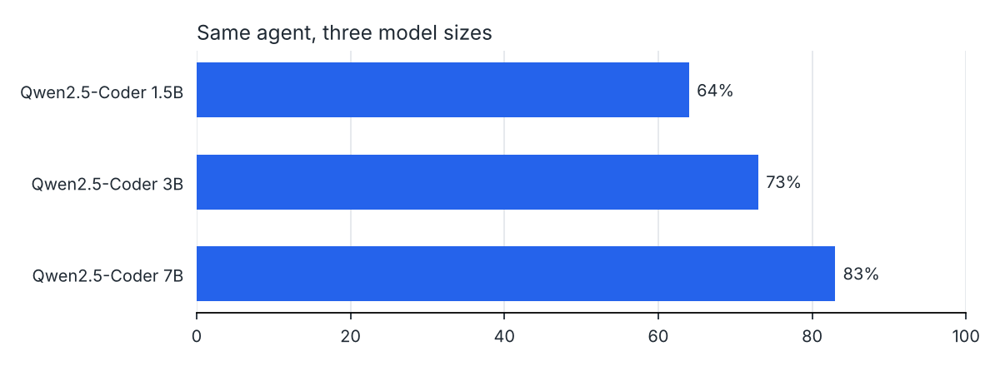
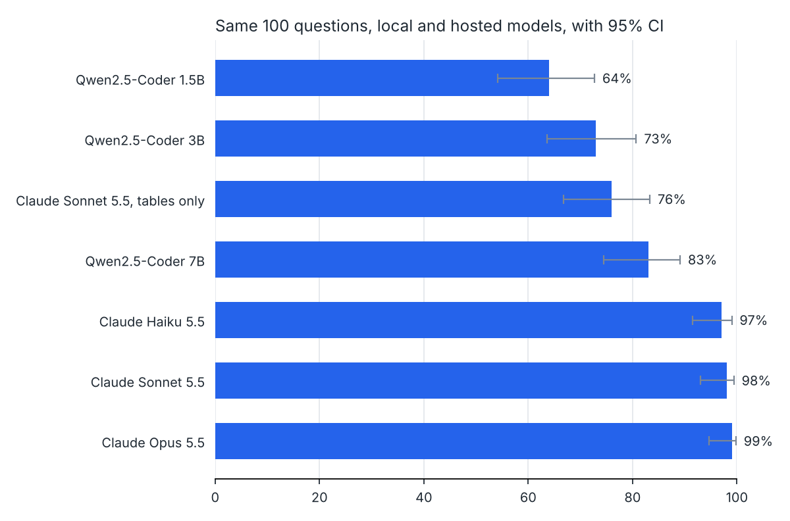
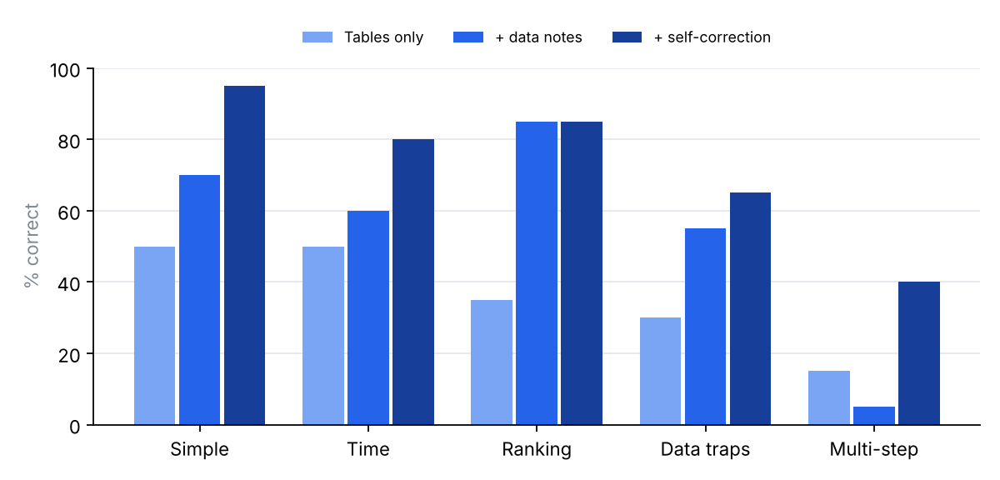

Ask Toronto 311
Ask a question about Toronto's 311 requests in plain English. Get the answer straight from the city's data, along with the SQL that found it. I tested it on 100 questions with free local models and with Claude.
Why I built this
When a pothole opens up on your street or the garbage truck skips your house, you call 311. Toronto publishes every one of those calls as open data. In 2024 and 2025 alone there were 937,312 of them.
The data can answer real questions. Which wards get missed most on garbage day? Did pothole complaints jump after the winter? But getting answers out takes SQL and knowing the data's quirks. The city renamed many request types between years. Some postal codes are just the word "Intersection". Search for "dead animal" and you'll find 493 requests, when the real number is 34,492, because most are filed under "Cadaver".
So most people who could use this data never touch it. I wanted to see if a language model could close that gap, and whether its answers could be trusted.
What it does. You ask a question. The agent looks up a few similar solved questions, asks a model to write one SQL query using the table layout and a page of notes about the data, checks the query is a single read-only SELECT, and runs it with a login that can't change anything. If the query fails, the model sees the error and tries again. You get the result table, a chart if one fits, and the SQL. The model never writes the answer in its own words, so it can't make up a number.
The data
| Table | Rows | What's in it |
|---|---|---|
service_requests | 937,312 | When the request was made, status, first 3 characters of the postal code, ward, request type, and the city division that handled it |
request_types | 810 | Every request type name the city used, each mapped to a simple topic |
wards | 25 | Ward number and name |
v_requests | 937,312 | A view that joins all three. This is what the agent queries |
One row: 2024-01-01 08:53 · Completed · M4G · Don Valley West · "Road - Sinking" · Potholes and road damage · Transportation Services.
The topic column is something I added. Nobody asking about potholes would think to include "Road - Sinking", so the loader sorts all 810 types into 15 topics using tested rules. The data has no exact addresses, no complaint text and no closing date, so you can't ask how long the city took to fix something.
Why a better model matters here
When this agent gets something wrong, nothing looks wrong. You get a clean table with a believable number in it. Almost every mistake in the test was like that. So the score tells you how often someone would walk away with a bad number and not know it.
| Setup | Right (of 100) | What that means |
|---|---|---|
| Free Qwen 7B on a laptop CPU | 83 | About 1 answer in 6 is quietly wrong. 12 s each, free, data stays on your machine |
| Claude Haiku 5.5 | 97 | About 1 in 33. 1 s each, about a cent for all 100 |
| Claude Opus 5.5 | 99 | About 1 in 100. 2 s each, about 40 cents for all 100 |
A better model doesn't replace knowing the data, though. Without the notes and examples, Claude Sonnet got only 76 right.
How to run it: the steps are in the README. You need Python, Docker, and either Ollama (free, local) or an Anthropic API key.
1. Architecture
Two paths. An offline loader turns the city's CSV files into a typed PostgreSQL schema with a semantic layer. An online agent turns a question into one guarded, read-only SQL query.
The agent loop
examples = bm25.search(question, k=3) # retrieval, no test questions in the bank
messages = [system, schema + notes + examples + question]
for attempt in range(1 + max_retries): # max_retries = 2
sql = extract_sql(llm.chat(messages, temperature=0))
try:
safe = guard.check(sql) # parse, allowlist, row cap
rows = db.run(safe, role="agent_ro") # SELECT grants only, read-only, 15 s
if rows or already_retried_empty: return rows
feedback = "returned no rows; check filter values against the notes"
except UnsafeSQL | DatabaseError as e:
feedback = str(e) # the model sees the real error
messages += [assistant(sql), user(feedback + " Reply with the corrected SQL only.")]The table is the answer. The model never writes the prose summary, so it can't describe numbers it didn't compute. The chart type (number, line or bar) is chosen by rules from the result's shape.
2. How the model is used
| Setting | Value | Why |
|---|---|---|
| Models | Qwen2.5-Coder Instruct 1.5B, 3B, 7B (local). Claude Haiku 5.5, Sonnet 5.5, Opus 5.5 (API) | Open weights small enough for a CPU, compared with hosted models at three price points |
| Weights | GGUF, Q4_K_M (4-bit) | 7B fits in about 5 GB of RAM |
| Serving | llama.cpp server (Ollama works too), or the Anthropic SDK | Two adapters behind one chat() method, so the agent and the evaluation never change |
| Decoding | Local: temperature 0, max 400 tokens, context 8,192. Claude: effort low | Greedy local output makes runs reproducible and comparisons paired. Low effort keeps Claude fast and cheap on short SQL tasks |
| Output contract | one query in a ```sql block | Parsed by regex, then by sqlglot. Anything else is rejected with a reason |
| Calls per question | 1.03 on average (7B) | Retries only fire on loud failures |
Prompt anatomy
Token counts for one real question with the 7B tokenizer. The data notes are the biggest block and the most valuable one.
The data notes, as the model sees them (abridged)
- Prefer the view v_requests. It already joins ward_name and topic onto every request.
- Data covers 2024-01-01 to 2025-12-31. "Last year" means 2025.
- Seasons: winter = December, January, February; spring = March to May; ...
- topic groups 800+ raw request types into plain themes. Use topic for broad questions.
The city renamed many request types between 2024 and 2025, so filtering on one
request_type usually misses half the data. Topics: 'Animals and wildlife', 'Bins', ...
- status values: 'Cancelled', 'Closed', 'Completed', 'In Progress', 'New', 'Unknown'.
"Open" or "unresolved" means status IN ('New', 'In Progress').
- Forestry moved divisions: 'Parks, Forestry & Recreation' in 2024,
'Environment, Climate & Forestry' in 2025.
- ward_id is NULL when the ward is unknown; leave those out of ward rankings.
- postal_fsa is NULL when the request was logged at an intersection.Value lists (topics, statuses, divisions, date range) are read from the database at start-up, so the notes can't drift from the data.
3. Evaluation method
- Test set. 100 questions across 5 categories of 20: simple filters, time logic, rankings, data traps (renamed types, the forestry move, NULL meanings, "open"), and multi-step queries (ratios, windows, HAVING, set operations). Each has gold SQL. A test checks that every gold query runs and returns rows, and that no LIMIT cuts through a tie.
- Metric. Execution accuracy. The agent's result set is compared with the gold result set, not the SQL text. Column names and extra columns are ignored. Numbers are compared to 2 decimals. Order matters only when the gold query sorts. For "which X" questions, only the label column has to match. Each rule is unit-tested in
compare.py. - Leakage control. The 24 retrievable examples are written separately and share no question with the test set.
- Ablation. Components are added one at a time on the 3B model. Because decoding is greedy, each pair of runs is a paired comparison on the same 100 questions.
- Statistics. 95% Wilson intervals per run. Exact McNemar tests between neighbouring runs, which count only the questions where the two runs disagree.
- One scoring change, applied to everything. After the first runs, the scorer was too strict in two ways. It rejected month numbers in single-year questions, and it rejected label-only answers. The rules were fixed, and every saved run was re-scored from its stored SQL (
eval/rescore.py). No model was re-run. The fix raised runs by 2 to 8 points and left the ranking of setups unchanged.
Hardware: 4 vCPU, 15 GB RAM, no GPU. llama-cpp-python 0.3.36. All per-question outputs are in eval/results/*.jsonl.
4. Results
Ablation (Qwen2.5-Coder 3B)

| Setup | Correct | 95% CI | Simple | Time | Ranking | Traps | Multi | vs row above (right / wrong) |
|---|
- Data notes (+24 / −5, p < 0.001). The biggest gains were rankings (35 → 85) and traps (30 → 55). Most of the errors removed were lookups against values the model couldn't see.
- Retrieved examples (+22 / −4, p < 0.001). Multi-step went from 5 to 40, because the examples show the patterns (FILTER, window functions, HAVING) the model then adapts.
- Self-correction (0 / 0). With context in place, only 3 of 100 queries failed loudly (2 database errors, 1 empty result). None got fixed in 2 retries. The other 24 misses ran cleanly and returned wrong numbers, which an error-driven loop never sees.
- A "don't copy filters" instruction (0 / −2, p = 0.50). It targeted a real failure mode but didn't help. It's left off by default and kept in the record.
Model size (full agent)

| Model | Correct | 95% CI | Median | p90 | vs smaller (right / wrong) |
|---|
Each step up in size helps, but on 100 questions neither step clears p < 0.05 (p = 0.06 and p = 0.05). The context ablation is a much stronger result than the model-size one. Going from 3B to 7B costs about 1.8 times the latency for 10 points.
Hosted models: Claude
The same agent, prompt and scorer, with one adapter swapped in (claude_llm.py, official Anthropic SDK). Thinking effort is set to low. The schema and notes block carries a cache marker, so after the first question it's read from the prompt cache. Across a run, about 78% of input tokens came from the cache. The last column compares each model with the local 7B on the same questions.

| Model | Correct | 95% CI | Median | Run cost | Per correct answer | vs Qwen 7B (right / wrong) |
|---|
- Hosted beats local by a clear margin. Haiku 5.5 gets 14 more right than the 7B (+15 / −1, p < 0.001), about 12 times faster. All 100 questions cost about a cent.
- The test set is saturated for these models. Haiku, Sonnet and Opus score 97, 98 and 99, and their intervals overlap almost completely. No pair differs significantly (Haiku vs. Opus is +2 / −0, p = 0.50). Telling them apart needs harder questions, not more runs of these.
- Context is not a small-model crutch. Without notes or examples, Sonnet drops to 76, no better than the local 7B with context (83, p = 0.25). Adding them back gives +23 / −1 (p < 0.001). All 24 tables-only misses are silent wrong results, with no invalid SQL.
- What's left is data traps. The 6 misses across the three full runs fall on 3 questions. All three models count "dead animal" requests with a keyword search, which finds 493. The city files most of them under "cadaver", and the real count is 34,492. A model can't infer that, so it's a gap in the notes, and adding one line should fix it.
- Latency isn't comparable. API wall time and local CPU time measure different things. The hosted numbers include the network.

5. Error analysis
Every one of the 7B model's 17 misses was read and given one primary cause. Labels are in eval/error_labels.yaml.
| Cause | Misses | Cases |
|---|
Every class here is silent. The query runs and returns something plausible. Each class points to a cheap, specific fix (see Next steps). A larger model alone hasn't removed any class: the 7B still copies filters and writes BETWEEN 23 AND 5.
6. Design decisions
| Decision | Alternative | Why this one |
|---|---|---|
| Topic layer in the database, built from tested regex rules | Let the model search 810 raw type names | The city renamed types mid-period. A deterministic, unit-tested mapping is cheaper and more reliable than hoping the model finds every spelling. |
One joined view (v_requests) | Expose only base tables | Fewer joins for the model to get wrong. Base tables stay available for the rare query that needs them. |
| BM25 over 24 examples | Embedding search | Short questions and a tiny bank. No second model or vector store. Retrieval sits behind one class, so it can be swapped. |
| Two safety layers: parser allowlist and DB role | Prompt instructions only | Prompts aren't a security boundary. Even a query that slips past the parser can't write, because the role has SELECT grants only and read-only transactions. That's tested. |
| Greedy decoding | Sampling | Reproducible runs and paired statistics. Sampling is saved for a future voting step. |
| Return rows, not model-written prose | Have the LLM narrate the answer | Removes a second place to hallucinate and halves the calls. |
One chat() interface, two adapters (OpenAI-compatible for local models, Anthropic SDK for Claude) | One generic client for everything | The agent and the evaluation don't change between providers. Each adapter uses its provider's own features, such as llama.cpp's prefix reuse or Claude's prompt cache and effort setting, instead of a lowest-common-denominator shim. |
| A hard spend cap in the adapter | Watch the bill | The Claude adapter tracks real cost from the API's usage numbers and stops the run before it passes --max-usd. Results are written per question, so a stopped run resumes where it left off. |
7. Limitations
- Small test set. 100 questions gives intervals of about ±9 points. Differences under about 10 points between setups shouldn't be trusted.
- One author. The same person wrote the questions, the gold SQL, the notes and the examples. The notes probably cover the traps better than they would for questions written by strangers.
- No confidence signal. The agent can't tell a right answer from a silent wrong one, and that's where most of the remaining error is.
- Single-turn. It doesn't ask clarifying questions. For ambiguous phrasing, it picks one reading.
- CPU latency. 12 s median for 7B is fine for analysis and too slow for chat. Hosted models answer in 1 to 2 s, but the data leaves the machine.
- Ceiling effect. Hosted models score 97 to 99, so this set can rank local models but not hosted ones.
Next steps, ranked by expected gain per hour
- Result-shape check. If a "how many" question returns more than one row, send it back. Targets all 3 output-shape misses.
- Two more notes. One on time ranges that wrap past midnight or the year end, and one telling the model to prefer topic over keyword search. Targets 6 misses.
- Self-consistency. Sample 5 queries, execute them all, and keep the majority result. This is the standard answer to silent errors, at about 5 times the compute.
- A harder, 300-question test set written partly by someone else, with more ambiguous phrasing and multi-table questions. It would tighten intervals, separate the hosted models and test the notes honestly.
8. Sample runs
Straight from the 7B evaluation run, including one miss.
{{DEMOS}}